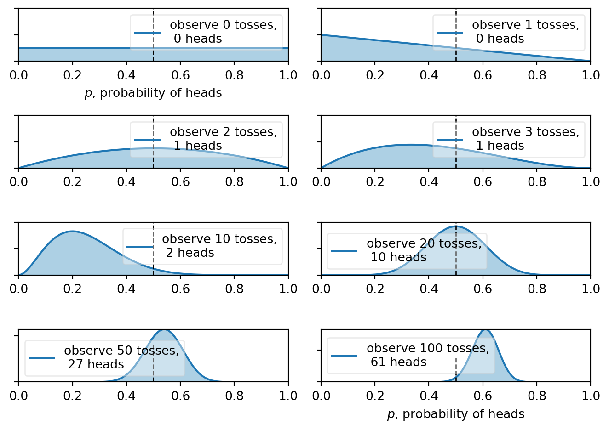

import numpy as np
import matplotlib.pyplot as plt
import pandas as pd
import pymc as pm
import configBayesian Inference
You can add options to executable code like this
#| echo: false
2 * 2The echo: false option disables the printing of code (only output is displayed).
Statistical Inference
Statistical inference is the process in which we make inferences (estimates) about a population or problem space when we only have a sub-sample of the total probable outcomes. In the vast majority of cases, we can never collect data for the entire population of the problem space but instead can only sample a subset.
For example, some classic problems would be estimating the average height of everyone on earth when we only have the heights of 200 people or determining what is the probability of loan defaults for all potential loan customers given that I have 200 customers and 2 have defaulted in the last year. Another example closer to home would be using the daily returns of a stock or futures contract form the last 2 years (our sample) to estimate the population of ALL possible daily returns - most likely used to model the returns of the stock on contract going forward in time.
There are broadly two main approaches to making estimates about a population given data from a sub-sample from the population, a Frequentist approach and a Bayesian approach.
Frequestist Approach
First lets define frequentist statistics. A frequentist approach to statistics is concerned with calculating the long-run probability of an outcome or event. This is the method that you were taught in school involving a lot of math, probabilities and p-values. The implicit assumption that we’re making with this approach is that we have some ability to determine the long-run probability of an outcome. For example the long-run probability of getting heads on a coin toss would be 0.5 based on what we know about the mechanics of a coin toss. However, what if thought that the coin might not be a “fair” coin? How would we arrive at the probability of heads then if we had data on tosses of that coin?
A Frequentist approach to solving this problem (also called frequentist inference) would be to create a hypothesis and test it. To do so, we’re going to first generate a sequence of 100 coin tosses using an unfair coin.
p = config.p2
ntoss = 100
rng = np.random.RandomState(13) #15 for 40
data = rng.binomial(n=1, size=ntoss, p=p)
heads = data.sum()
print("Number of heads in sample: ", heads)Number of heads in sample: 61Next we have to create a null hypothesis which in our case is that the coin is a fair coin toss. The alternative hypothesis is that the probablity of heads is greater than 50% and thus unfair.
h0: p = 0.5 # the null hypothesis that the coin is fair…
h1: p > 0.5 # the alternative hypothesis
The goal here is to accept or reject the null hypothesis by determining the odds of getting your result under the null hypothesis that the coin is fair.
Said another way, Frequentist inference asks the question, what would be the likelihood of getting 61 heads on 100 coin tosses if the coin was fair? To do this, we’ll do the 100 tosses of the fair coin, 10,000 times to see how often we get 61 or more heads out of a hundred.
nsamples = 10000
print(f"Flip {ntoss} coins, {nsamples} times...\n")
pop = rng.binomial(n=1, size=ntoss*nsamples, p=0.5)
sample = rng.choice(pop, size=(ntoss,nsamples))
cnt = sample.sum(axis=0)
print("Number of heads for each sample of 100 tosses (first 20 samples):\n")
print(cnt[:20])Flip 100 coins, 10000 times...
Number of heads for each sample of 100 tosses (first 20 samples):
[46 46 54 59 52 45 54 55 58 47 64 44 46 56 47 54 50 52 48 50]Now let’s determine how many times we got 61 heads or more…
print(f"probability of getting {heads} heads or more: ",
round(len(cnt[cnt >= heads])/nsamples*100,4), "%")probability of getting 61 heads or more: 1.83 %Then, because the odds of getting 61 heads or more on a fair coin is only 1.83%, I would reject the null hypothesis h0 that the coin is fair. This is your p-value, the odds of getting this result under the null hypothesis. Note that most statisticians reject the null hypothesis if the p-value is less than 5%. We also call the p-value you false-positive rate - if the coin was fair it would only show 61 heads (and that the coin was unfair) 1.83% of the time, causing you to reject the null hypothesis incorrectly.
However, there are a number of issues with using this approach.
Issue #1: Just because the result is unlikely, doesn’t make it impossible
Remember, even with the fair coin, we still got 61 or more heads 1.83% of the time. Also, even an unfair coin can sometimes produce results that would be indicative of a fair coin…
rng = np.random.RandomState(12) # 15 for 40
data = rng.binomial(n=1, size=ntoss, p=p)
heads = data.sum()
print("Number of heads in sample: ", heads)
print(f"probability of getting {heads} heads or more: ", round(len(cnt[cnt >= heads])/nsamples*100,4) , "%")Number of heads in sample: 57
probability of getting 57 heads or more: 10.08 %Even though we generated this sample using the same probability of heads as before, now we can’t reject the null hypothesis!
Issue #2: Picking the right hypothesises is hard
In the example above, just because we’ve rejected the null hypothesis, it doesn’t actually tell us what the true value of p is! For example another alternative hypothesis could be p < 0.5. While this is a simple example with only 3 possible outcomes for p, there are many real life examples where there are many possible explanations aside from the null hypothesis.
h0: p = 0.5
h1: p > 0.5
h2: p < 0.5
p = config.p3
rng = np.random.RandomState(101) #15 for 40
data = rng.binomial(n=1, size=ntoss, p=p)
heads = data.sum()
print("Number of heads in sample: ", heads)
print(f"probability of getting {heads} heads or more: ", round(len(cnt[cnt >= heads])/nsamples*100,4) , "%")
plt.hist(sample.mean(axis=0))
print(
"2.5th Percentile = " + str(np.percentile(sample.sum(axis=0), 2.5)) + " heads",
"97.5th Percentile = " + str(np.percentile(sample.sum(axis=0), 97.5)) + " heads"
)Number of heads in sample: 42
probability of getting 42 heads or more: 95.39 %
2.5th Percentile = 40.0 heads 97.5th Percentile = 60.0 heads
In this case, without knowing the answer which alternative hypothesis would you use? Also it’s bad practice just keep on testing various hypothesizes. This is because even with a result that shows a p-value of < 5%, this still means that you could randomly get a false-positive. The chance of getting a false-positive with a p-value of 5% on 20 tests is 100%! i.e. random chance alone will give you a false-positive if you just run enough tests…
rng = np.random.RandomState(10)
for i in range(0,20):
data = rng.binomial(n=1, size=ntoss, p=0.5)
heads = data.sum()
print(f"probability of getting {heads} heads or more: ", round(len(cnt[cnt >= heads])/nsamples*100,4) , "%")probability of getting 49 heads or more: 62.57 %
probability of getting 49 heads or more: 62.57 %
probability of getting 51 heads or more: 46.45 %
probability of getting 52 heads or more: 38.84 %
probability of getting 58 heads or more: 6.91 %
probability of getting 44 heads or more: 90.3 %
probability of getting 47 heads or more: 75.92 %
probability of getting 57 heads or more: 10.08 %
probability of getting 48 heads or more: 69.7 %
probability of getting 42 heads or more: 95.39 %
probability of getting 46 heads or more: 81.77 %
probability of getting 49 heads or more: 62.57 %
probability of getting 50 heads or more: 54.58 %
probability of getting 48 heads or more: 69.7 %
probability of getting 52 heads or more: 38.84 %
probability of getting 57 heads or more: 10.08 %
probability of getting 51 heads or more: 46.45 %
probability of getting 45 heads or more: 86.56 %
probability of getting 61 heads or more: 1.83 %
probability of getting 47 heads or more: 75.92 %As you can see, even with a fair coin, we generated 61 heads. If we had this result, we would have rejected the null hypothesis incorrectly.
Trying to Determine the Long-run Probability Does Not Always Make Sense
In many classes of problems, the concept of a long-run probability doesn’t always make sense. For example what is the long-run probability that our Sun will go nova tomorrow? Who knows? We only have one sun and it’s never gone nova before!
Issues
So in summary, some issues with using a frequentist approach is that:
- It does not tell you what the most likely answer is…
- It does not tell you if p=0.5 is wrong, just unlikely. You can still get 90 out of a hundred heads with p=0.5. This is your false positive rate.
- Long-run probabilities don’t always exist.
Note that what we’ve done above is not the true way to calculate the p-value as most statistical methods use formulas to calculate it vs simulations.
That’s not to say a frequentist approach is bad and in fact bayesian inference converges to the frequentist approach with sufficiently large samples. However let’s now have a look at Bayesian Inference.
Bayesian Approach

Bayesian inference and Bayesian statistics in general is named after the statistician Thomas Bayes.
In contrast to the frequentist method, Bayesian inference is focused on the probability that something is true. It asks the question, “what do I think is the underlying data generating process” and then uses this to determine the probability of the data given the model.
It begins with a measure of belief in a particular model or number, then with the addition of data, this belief is updated to reflect this new data. In my opinion, it is a more intuitive and natural method for incorporating data into the analytical process.
The general recipe for Bayesian inference is:
- Pick a model that could have generated the data that you see (i.e. linear model, binomial distribution etc…)
- Pick a prior distribution for the parameters of the model based on your knowledge of the process if any (this can also be uninformed).
- Count the number of ways that your assumed model could have generated your data for each value of your parameter(s).
- Parameters with more ways to produce your data are more plausible - put this together in a posterior distribution for your parameters.
Let’s start with the same example as in the frequentist example, let’s say we have a coin and we want to determine if it’s fair. Let’s generate a sequence of 10 coin tosses.
[0 1 0 0 0 1 0 0 0 0]Since this is a coin toss, we will pick a binomial distribution as the likely process that generated our data. That means we need to determine the value for p. Remember, p=0.5 means it is a fair coin.
Based on the sequence above, what is the most probable value of p? A bayesian approach would ask how often would this sequence of data occur if p was 0.5? If it was 0.6? If it was 0.7? etc. We can then use this information to determine the most likely value of p.
Since we don’t have any information aside from the data on the value of p we will start with an uninformed prior (i.e. we will try all values of p). We will try a range of values for p from 0.1 to 0.9 and flip the coin 10 times to generate a sample. We will then repeat this sample of 10 flips 1000 times to see how often we see 2 heads for each value of p.
First we will run with p=0.1.
p = 0.1
rng = np.random.RandomState(13)
ps = [0.1,0.2,0.3,0.4,0.5,0.6,0.7,0.8,0.9]
cnt = np.array([0,0,0,0,0,0,0,0,0])
for i in range(0,1000):
tmp = rng.binomial(n=1, size=10, p=p)
if tmp.sum() == data.sum():
cnt[0] += 1
fig, ax = plt.subplots(1,1)
ax.bar(x=ps, height=cnt, width=0.1);
Now let’s run it again for p=0.2 so see how often we get 2 heads.

Then we will run it for all values for p between 0.1 and 0.9.

Finally we can normalize the data to get proper probablities for p.

This now gives us the number of times that 1000 draws of 10 coin tosses would give us 2 heads for each value of p. In other words we now have a probabiility distribution for the value of p given the data that we have (i.e. 2 heads out of 10 coin tosses). This is the essence of bayesian inference, basically counting, where we make some assumption on the underlying data generating process and given this a priori assumption, we determine how likely each parameter is in generating the data that we see.
To repeat, our thought process was:
- Because this is a coin toss, I think the underlying data generating process is a binomial distribution.
- However, I do not know what the value of
pis so I’m going to try all values ofp(uninformed prior). - For each value of
p, let’s count all the ways that my process can generate the data that I see. - Put this together into a posterior distribution for
p. Values ofpwith more ways to produce my data are more plausible. This is my estimate forpwith my uncertainty built in.
I’m now going to introduce you to a slightly easier way for us to perform that same calculation. The issue with the above is that it is computationally expensive and hard to update with new data without rerunning the whole thing.
So similar to above, we’re still going to assume that the data generating process is a binomial distribution with parameter p. Also just like before, let’s assume that we have no information on p prior to drawing our sample of 10 coin tosses. So our prior estimate is a uniform distribution between 0 and 1 (i.e. any value of p is equally likely).
dist = stats.beta
x = np.linspace(0, 1, 100)
y = dist.pdf(x, 1, 1)
plt.figure(figsize=(4,2))
plt.plot(x,y, label='Initial Estimate for p')
plt.fill_between(x, 0, y, color="#348ABD", alpha=0.4)
plt.vlines(0.5, 0, 4, color="k", linestyles="--", lw=1)
plt.ylim((0,3))
plt.title("Prior distribution for p");
Now let’s also define a probability density of Heads and Tails:

Now we can just multiply the initial probability density for our uniformed p by either HEADS or TAILS as it comes up in our sequence. As a reminder our sequence was:
# heads is 1
print(data)[0 1 0 0 0 1 0 0 0 0]n_trials = [1, 2, 3, 4, 5, 6, 7, 8, 9, 10]
plt.figure(figsize=(7, 9))
post = dist.pdf(x, 1, 1)
sx = plt.subplot(len(n_trials)//2 + 1, 2, 1)
plt.plot(x, post, label='Uninformed prior')
plt.setp(sx.get_yticklabels(), visible=False)
plt.fill_between(x, 0, post, color="#348ABD", alpha=0.4)
plt.vlines(0.5, 0, 2, color="k", linestyles="--", lw=1)
leg = plt.legend()
leg.get_frame().set_alpha(0.4)
plt.autoscale(tight=True)
plt.xlabel("$p$, probability of heads") \
for k, N in enumerate(n_trials):
sx = plt.subplot(len(n_trials)//2 + 1, 2, k+2)
plt.xlabel("$p$, probability of heads") \
# if k in [0, len(n_trials)-1] else None
plt.setp(sx.get_yticklabels(), visible=False)
if data[N-1] == 1:
post *= H
else:
post *= T
# y = dist.pdf(x, 1 + heads, 1 + N - heads)
plt.plot(x, post, label="observe %d tosses,\n %d heads" % (N, data[:N].sum()))
plt.fill_between(x, 0, post, color="#348ABD", alpha=0.4)
plt.axvline(0.5, color="k", linestyle='--', lw=1)
leg = plt.legend()
leg.get_frame().set_alpha(0.4)
plt.autoscale(tight=True)
plt.tight_layout()
We now have our estimate for p based on 2 heads out of 10 coin tosses. The value of p with the highest likelihood is 0.2 but there is a non-zero probability for values near zero to all the way past 0.6. But what would happen if we toss that same coin more and more and collected more data? We would be able to better refine our estimate for p.
n_trials = [0, 1, 2, 3, 10, 20, 30, 50, 100, 400]
plt.figure(figsize=(7, 9))
rng = np.random.RandomState(13)
data = rng.binomial(n=1, size=n_trials[-1], p=config.p2)
for k, N in enumerate(n_trials):
sx = plt.subplot(len(n_trials)//2 + 1, 2, k+1)
plt.xlabel("$p$, probability of heads") \
if k in [0, len(n_trials)-1] else None
plt.setp(sx.get_yticklabels(), visible=False)
heads = data[:N].sum()
y = dist.pdf(x, 1 + heads, 1 + N - heads)
plt.plot(x, y, label="observe %d tosses,\n %d heads" % (N, heads))
plt.fill_between(x, 0, y, color="#348ABD", alpha=0.4)
plt.vlines(0.5, 0, 4, color="k", linestyles="--", lw=1)
leg = plt.legend()
leg.get_frame().set_alpha(0.4)
plt.autoscale(tight=True)
plt.tight_layout()
As you can see as we continue to toss the coin past 10 coin tosses, we can further refine our estimate for p such that the value with the highest probability is now 0.6 whereas when we only had 10 coin tosses, p=0.6 has a very low (but non-zero) probability. Note that I’ve using p=0.6 throughout this example.
Where Bayesian Inference Shines
I find that I turn to bayesian inference in two main situations:
- When I don’t have a lot data. It allows you to preserve the highly uncertain nature of your parameters and not imply certainty where none exists.
- When I need a data generative model. Related the first point, there are times when I need to run simulations and experiments and because the outcome of Bayesian inference is a postier distribution for my observed data, I can use this to run experiments. In my next example I will show you this.
Practical Example 1: Linear Regression
First off, let’s try linear regression using bayesian inference. Here, I’ve pregenerated a dummy dataset. Let’s import it and plot it.
import linearregression as lr
plt.scatter(lr.x, lr.y);
We can now also turn to more sophisticated tools for linear regression. One that I like is PYMC but there are many other packages such as Numpyro, Tensorflow Probability, and Pyro. I’m going to use PYMC here.
import pymc as pmNext we have to build a model for what we think our data generative process might be. A common model for linear regression is:
\[ y_i = a + b x_i + \epsilon \]
Assuming that \(\epsilon\) is normally distributed with mean 0 and standard deviation \(\sigma\).
\[ y_i = a + b x_i + \mathcal{N}(0, \sigma) \]
Finally we then have:
\[ y_i = \mathcal{N}(a + b x_i, \sigma) \]
We do this because bayesian inference perfers to think in probability distributions. At the same time, we do not have any prior knowledge of a or b so we will use a uniform distribution as our priors with very large bounds. However one thing we do know from the data is that both a and b are above zero.
with pm.Model() as model:
# define priors
a = pm.Uniform('a', lower=0, upper=1000)
b = pm.Uniform('b', lower=0, upper=1000)
sigma = pm.Uniform('sigma', lower=0, upper=1000)
y = a + b * x
# define likelihood
likelihood = pm.Normal('y', mu=y, sigma=sigma, observed=lr.y)So now we have distributions in distributions. The model now has to be fitted.
with model:
# Interence Here!
# draw 3000 posterior samples using NUTS sampling
idata = pm.sample(3000)Auto-assigning NUTS sampler...Initializing NUTS using jitter+adapt_diag...Multiprocess sampling (4 chains in 4 jobs)NUTS: [a, b, sigma]
100.00% [16000/16000 00:01<00:00 Sampling 4 chains, 80 divergences]
Sampling 4 chains for 1_000 tune and 3_000 draw iterations (4_000 + 12_000 draws total) took 3 seconds.Practical Example 2: Pipeline Outage Data
In this example we’ll be working with pipeline outage data. Let’s say that we have two different locations connected by two different pipelines A and B.
graph LR
A(Location 1) -- Pipeline A --> B(Location 2)
A -- Pipeline B --> B